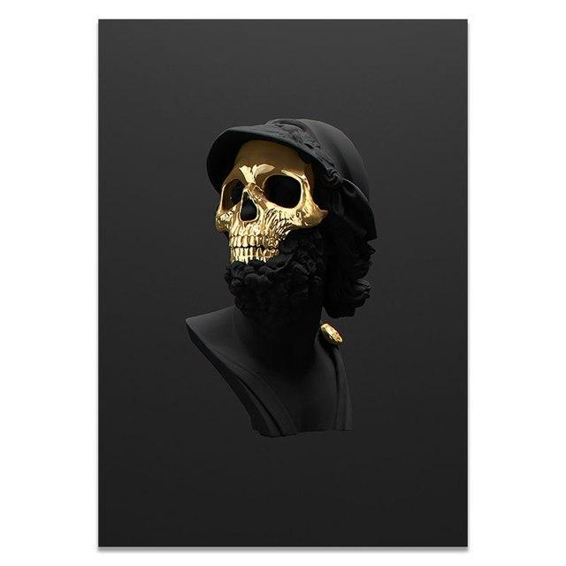

Enes Cankar
Hakkımda
Bilgisayar Programcılığı bölümünü okuyorum ve Haziran 2022’den beri UI/UX Tasarımı alanında eğitim almaktayım. Kullanıcı deneyimini ve arayüz tasarımını birleştirerek kullanıcıların
ihtiyaçlarını karşılamaya ve onlar için en iyi deneyimi sağlamaya çalışıyorum.
Sevdiğim Diziler ve Filmler
- Star Wars Evreni
- The Office
- Westworld
Eğitim
Userspots UX Okulu
Haziran 2022 - Mart 2023
- Mobil UI/UX Tasarımı: Mobil uygulamaların kullanıcı arayüzü tasarımını içerir.
- Web UI/UX Tasarımı: Web siteleri ve uygulamalarının kullanıcı arayüzü tasarımını içerir.
- Advanced UX: Kullanıcıların davranışları, motivasyonları, beklentileri ve ihtiyaçları gibi faktörleri dikkate alarak tasarım sürecini yönetir. Böylece, kullanıcıların en iyi deneyimi sağlanır ve uygulamanın veya web sitesinin verimliliği artırılır.
Atatürk Üniversitesi, Bilgisayar Programcılığı
Eylül 2021 - devam ediyor
- Web Geliştirme: HTML, CSS, JavaScript, Ruby on Rails, PHP, Django gibi teknolojileri kullanarak web siteleri ve uygulamalarını geliştirmeyi kapsar.
- Mobil Geliştirme: iOS ve Android işletim sistemleri için mobil uygulamaların geliştirilmesini kapsar.
Deneyim
Nilüfer Belediyesi, Finans Departmanı
Eylül 2018 - Haziran 2019
Decathlon Turkiye, Spor Lideri
Yetenekler
- Figma
- Illustrator
- Adobe XD
- Photoshop
- Miro
- After Effects